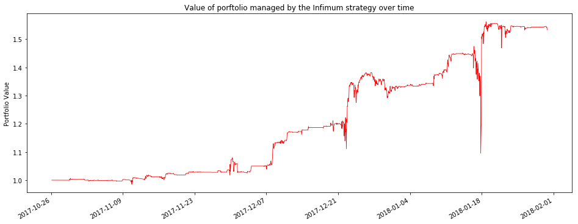
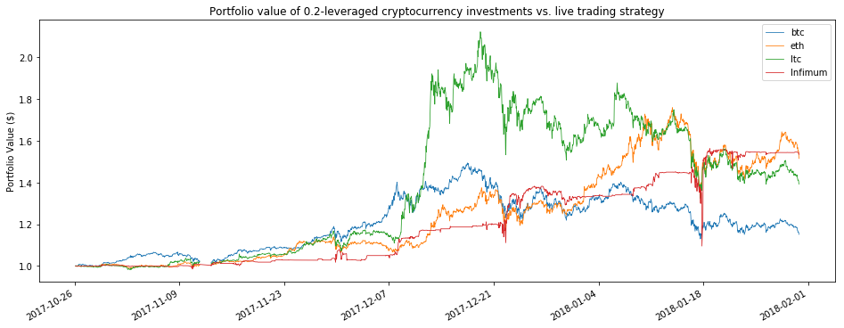
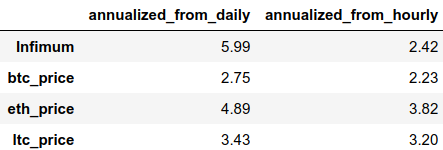

2018-03-22
Infimum Technologies
Introduction
Over the past six months or so, I have been building Infimum Technologies, a project dedicated to one of the most challenging applications of machine learning: the profitable forecasting of financial markets. For this venture, I chose to approach the cryptocurrency markets from scratch: no preexisting codebase or dataset, no preconceived trading strategy. From my work so far, I have had the chance to learn and practice a tremendous amount of applied machine learning and time series prediction in a real-world setting (without the predefined performance metrics and well-formulated problem structures found in places like Kaggle). Also, from November through January an early live trading test was up by over 50%, with an annualized Sharpe ratio north of 2. As a result, Infimum has garnered significant outside interest, leading to conversations with a number of traders both amateur and professional and an offer for the 2018 Summer Incubator program at the i.Lab at UVA. Infimum is currently and for the immediate future staying as a side-project to me, however, as I have stepped into the Head Data Scientist role at Soteris.
The project
I chose cryptocurrency markets in particular for a few reasons.
- Data availability: Poloniex, for example, provides 5-minute intraday OHLC data going back years for every currently-listed coin.
- Flat fees: Virtually all cryptocurrency exchanges charge a flat percentage fee for trades, making it feasible to play around with small trades and not end up paying exorbitant fees.
- High volatility: It is not uncommon for the price of even major cryptocurrencies to move 5-10% in a day, and many multi-point moves happen over the course of minutes to hours. This makes it viable to trade multiple times a day and expect that price movements will be large enough to eclipse trading costs.
- Irrationality in the market: I had a hunch that a lot of price movements in these crazy markets were the result of the behavior of amateur traders. My thought was (and still is) that these amateurs are likely more predictable than Wall Street veterans used to the unyielding and ultimately adversarial nature of the market.
Additionally, since this is an exercise in machine learning more than in day trading, I chose to avoid most traditional theory in technical analysis. I also avoided covariance-stationary methods of time series analysis and went for a more irregular and creative approach. Unlike in my descriptions of other projects, though, I won't speak to too many of the machine learning details here, because the techniques I developed are my source of alpha, and divulging them could spoil this edge in the market.
Timeline
For context, here is a rough outline of Infimum.
July-August 2017
- I began playing around with cryptocurrency price data in my free time while working as a Software Development Engineer Intern at Amazon.
- Moved from data collection and exploration to modeling and machine learning.
- Found the first semblance of a predictive edge.
- Developed first automated trading scripts to test the predictive edge.
September-October 2017
- Incorporated Infimum Technologies, LLC.
- Engaged in heavy development of models and execution code.
- Paradigm shift from targeting returns in Bitcoin to targeting returns in dollars.
November 2017
- Launched first solid bot with both a validated strong predictive edge in backtesting and clean but overly simple execution logic (technically this launched on October 26).
- Light research into new data, feature engineering, and modeling approaches.
December-January 2017
- Final projects, exams, and travel for winter break left me with little time to work on Infimum.
- The beginning of downward trends in crypto markets actually equated to higher trading frequency and better returns for the long-only but very short-term trading strategy. Very exciting to watch it succeed!
- The automated strategy traded a lot in the volatile market, had some serious ups and downs that made me better aware of its unfinished state.
- Wrapped up backtest to begin work on a new iteration.
February-March 2017
- AI funds (at least outside of crypto) had worst month on record.
- New iteration of prediction system delivered few signals during this time period.
- New iteration of execution strategy overallocated to weak signals.
- Steady and significant losses (~10-15% range) were convincing that new modeling approach or new execution approach (or both) had likely introduced flaws (or that there was an uncaught bug).
Building a predictive edge
In order to trade with edge, one must have some sense of where the market is moving. Many subscribe to the notion that past price movement alone is not predictive of future price movement in financial markets. This notion has come to be known as the "weak form" of the Efficient Market Hypothesis, and a great number of academics treat this hypothesis like a law of nature, despite the number of quantitative firms that consistently outperform the market (like Charlottesville's very own Quantitative Investment Management) using past price data to make forecasts about the future.
Needless to say I'm not convinced about this, and so I set to work gathering together some historical pricing data to see if I couldn't just identify some predictive patterns. I pulled intraday OHLC data from Poloniex and set to work exploring the data. Once I had a decent sense of how much these prices move about (and wow do they move), I got to work with feature engineering and modeling. The time scale of prediction floated in the one to six hour range as a result of the short history of the crypto markets: even with three or four years of 24/7 trading data to draw on, one only has access to a few thousand trading days. If we look at a two-hour holding period rather than a two-day holding period, we have an order of magnitude more data points to work with.
One of the most interesting challenges I encountered along the way was the chicken-and-the-egg problem of figuring out the best prediction problem to solve without first seeing how good a solution I could come up with. Should I try and predict returns over six hours? How about thirty minutes? What if we assume trading with a stop-loss order or a profit target or both (meaning we sell out of a position if the price moves below or above certain thresholds)? How do I compare the performance and profitability of a model on each of these time-scales? When the end goal is "make money," it becomes a lot harder to frame the work as a single specific cut-and-dried prediction task.
But even faced with uncertainty and a slightly nebulous definition of the prediction task(s) to attack, a few key constants existed. Creative feature engineering empowered prediction on a variety of tasks. Clean, modularized code allowed for research and experimentation on a number of approaches. Using backtesting without overusing it (i.e. avoiding the cardinal sin of overfitting) was key. In the end, I created what I find to be interesting and valuable intellectual property capable of sifting some small signal out of the noise of the markets. This raised the question: is this signal strong enough?
From theory to practice
In working on Infimum, I engaged in a great deal of back and forth between developing a theoretical edge and testing it in practice on live trades. Indeed, I found it important to iterate rapidly and avoid losing touch with the actual goal of profitable trading when conducting R&D. This worked well for me, since unlike for major hedge funds, failure was an acceptable outcome for me.
Nevertheless, there was definitely some structure and discipline to my live trading, especially for the strategy run from November through January. The idea behind this system for testing my predictive edge was simple: every time I predict an asset price will increase significantly, place a fixed-time, fixed-price bet (i.e. buy a fixed amount of an asset, hold it for a predetermined number of hours, then sell it). To put this into practice, I created an automated system running on an Amazon EC2 cloud computing instance that perpetually ran predictions every hour and placed fixed-sized orders on Poloniex whenever there were strong upward predictions. The system also made sure to sell out of positions that had been held for their predetermined holding time. While there are a number of easy-to-spot potential improvements to this system (scaling bet size with overall portfolio size, for example), I found this approach did a fair job of evaluating the value of each prediction.
Another challenge of real-world trading that I had to tackle was the efficient execution of trades. While I found it much less exciting than the task of predicting the markets, the task of entering or exiting positions quickly but without paying exorbitant fees or buying/selling at a bad price can be just as important. For my three-month test, I developed a basic execution algorithm that allowed me to frequently execute trades as a liquidity maker (somebody who offers a trade instead of taking an existing offer) and thus pay fees of 0.15% per trade instead of 0.25%. This may not seem like a big difference, but when we expect the average payout of a bet to be less than one percent, dropping fees by about 0.2% per bet makes a huge difference!
As comfortable as I felt playing around with predicting the markets, I was definitely a novice when it came to running my own actual trading strategy and managing the entire endeavor as an LLC. Over the last half-year I have received a great deal of help navigating the non-machine-learning parts of this project. In particular Sunit Shah contributed immensely with his coaching and guidance. While Sunit's involvement was primarily as a coach for the management of Infimum as a company that might one day attract the attention of investors (he helped greatly in defining the business game-plan, evaluating and comparing growth opportunities, and de-risking the overall value proposition), he also provided a great deal of insight into industry best practices for evaluating and discussing the performance of a trading strategy.
Results
Without further ado, I present the performance of the first major strategy of Infimum Technologies. Using hourly performance data, I calculated an annualized Sharpe Ratio of 2.42. Interestingly enough, the use of daily returns smooths over the huge dip on January 17, reducing the annualized volatility (standard deviation of returns) from 0.81 to 0.29. As a result, annualized Sharpe calculated from daily returns was a whopping 5.99.

Live trading returns from 26 October 2017 - 30 Jan 2018
The largest drawdown in the hour-by-hour data took place from the middle of January 16 to January 17, when the portfolio value dropped by nearly 26% before rebounding to new all-time highs. Day-to-day the largest drawdown was just 5% from December 26 to December 30.
Comparison with buy-and-hold
For a comparison, we can take a look at how an investment directly in single cryptocurrencies would have performed during the same time period. In doing this, it is first important to note that the entire crypto market is highly correlated. Most major cryptocurrencies correlate to Bitcoin very highly, and it is typical to see correlation coefficients in excess of 0.5. The portfolio value of my live trading test ended up correlating well over 0.5 to the prices of other major cryptocurrencies over this time period, which might be a good thing, considering how much the market soared in November and December.
{kind=link}
Snapshot of the correlation matrix for live trading net_worth and price of major cryptocurrencies
Additionally, since my strategy often kept a lot of the portfolio in dollars, it effectively de-leveraged the portfolio. To compare against other coins on a reasonable scale, we first need to de-leverage them as well. Here is a comparison of the value of one dollar managed by the Infimum strategy against the values of portfolios consisting of twenty cents in a cryptocurrency and eighty cents in dollars.

Porfolio values from 26 Oct 2017 - 30 Jan 2018
Another way to normalize for the de-leveraging effects of the tested strategy is to look at Sharpe ratios. As discussed above, annualizing Sharpe from hourly or from daily returns has a big impact on the Sharpe ratio of the tested strategy, so I have included both sets of calculations. 
Sharpe ratios from 26 Oct 2017 - 30 Jan 2018
The Sharpe ratios only tell part of the story, though, as we can see that they are driven by the extreme returns from mid-November to mid-December, while the Infimum Sharpe is driven by returns attained across the entire period.
The future of Infimum
Recently, my primary focus has shifted from Infimum Technologies to Soteris, Inc., where I am working to use the same rigorous scientific approach, creativity, and advanced machine learning techniques to drive value for insurance companies.
I believe that the techniques developed in these past months are already compelling and valuable, but I also believe that there is a great deal of room for improvement in the future. I look forward to further improving my alpha, and while I am currently not running any live trading systems, I hope to soon create a new strategy built around what I've learned from what I've done so far, both in my successful three-month test and the less successful short tests run in the last few months.
Additionally, while low-cost data and execution are oftentimes more challenging to find in other markets, I also plan to also investigate how Infimum's techniques developed for cryptocurrency markets stack up against more traditional markets.